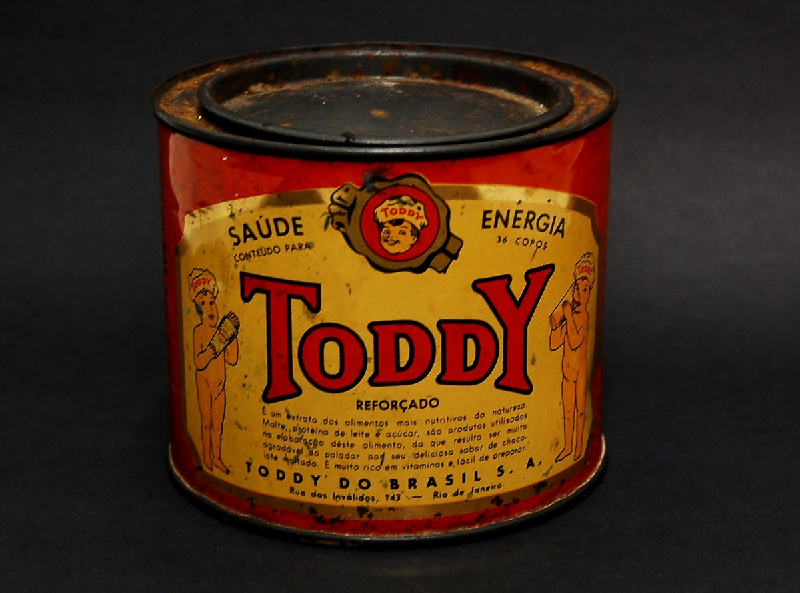

The context behind one of the most traditional and famous chocolate milk brands in Brazil had a dramatic beginning. It all starts in 1916, after the family of Spanish immigrant Pedro Erasmo Santiago lost their entire cocoa plantation to a hurricane that devastated the entire island. Without much of his wealth left, Pedro migrated to the United States, in a new attempt to generate income. In this way, over a long period of 15 years, Santiago managed to prosper economically, going from a bathroom cleaner to a large food businessman. With good financial conditions, he decided to invest and buy the rights to use the TODDY brand in South America, launching, in the mid-1930s, a chocolate bar in Argentina where he had his own factory for the product.
The initial prototype of the chocolate drink, encompassed characteristics of two hot drinks taken in winter, the Scotch Toddy (made with honey, cream, egg yolk and whiskey), and the Rum Toddy (made from sugarcane molasses, cocoa and rum), but obviously without alcohol. Around 1933, Pedro Santiago received permission from the Provisional Government of Getúlio Vargas to sell the product in the country, earning the title of one of the first chocolate powders on the Brazilian market. Advertisements for the previously canned powder appeared everywhere, taking advantage of health benefits through phrases that characterized the product as a food supplement. Already very popular, the product underwent expansions, changes in composition and aesthetics, but always preserving the characteristic taste of chocolate milk. It began to be sold in Spain, the United States, Portugal and many other countries, gaining its place in people's breakfasts and marking a generation of Brazilian children.

The current product and its composition
With the advancement of modernity and also after the brand was sold to Quacker Oats (one of the giant PepsiCo's affiliates), Toddy underwent major positive changes in its development. Starting with the change in packaging, which stopped being in cans and became in resistant plastic packaging, increasing the hygiene and integrity of the food. The changes didn't stop there, as with the growth of the brand and product, they started to launch variations of the chocolate milk along with new foods such as cookies, refills, ready-made chocolate milk and much more.
Currently the product in its original variation and standard version (400g) has the following ingredients: sugar, cocoa, malt extract, salt, whey powder, skimmed milk powder, vitamins ( B1, B2, B3, B6, A, C and D), soy lectin stabilizer and flavorings. Below you will see a table with some more specific proportions: